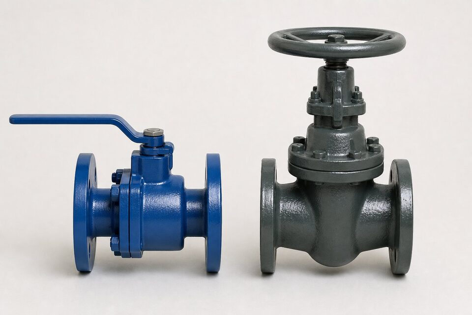

دو متریال، دو دنیای کاربرد
بدنه شیر، پوسته تحت فشار آن است و متریالش محدوده سرویس را تعیین میکند. چدن با ریختهگری آسان و قیمت پایین، انتخاب کلاسیک تاسیسات عمومی است. فولاد با چقرمگی و تحمل بالاتر، انتخاب خطوط فرایندی و سرویسهای سخت.

جدول مقایسه
| معیار | فولادی | چدنی |
|---|---|---|
| تحمل فشار | بالا | محدود |
| تحمل دما | بالا | محدود |
| چقرمگی | خوب؛ مقاوم در ضربه | ترد؛ حساس به ضربه و شوک |
| سیکل حرارتی | مناسب | محدود |
| هزینه | بالاتر | اقتصادی |
| کاربرد رایج | فرایند، نفت و گاز، بخار | آب، تهویه، تاسیسات عمومی |
محدودیتهای چدن
- محدوده فشار و دمای محدود نسبت به فولاد.
- حساسیت به ضربه مکانیکی و شوک حرارتی.
- نامناسب برای سیالات قابل اشتعال و سرویسهای حساس.
- نیاز به بررسی دقیق محدوده مجاز در هر پروژه.
معیارهای انتخاب
- فشار و دمای سرویس را مشخص کنید.
- ماهیت سیال و حساسیت ایمنی را ارزیابی کنید.
- برای تاسیسات عمومی کمفشار، چدن اقتصادی است.
- برای فرایند، بخار و سرویسهای سخت، فولاد انتخاب کنید.
- مشخصه پروژه را مرجع نهایی قرار دهید.
ملاحظات ایمنی
شکست ترد چدن در صورت ضربه یا شوک حرارتی میتواند ناگهانی و بدون هشدار باشد؛ بنابراین در نقاطی که ریسک ضربه مکانیکی، یخزدگی یا سیکل حرارتی وجود دارد، باید با احتیاط مضاعف ارزیابی شود. در سرویسهای قابل اشتعال یا سمی، استفاده از چدن معمولاً مجاز نیست و فولاد انتخاب میشود.
نمونههای کاربردی
| کاربرد | متریال بدنه معمول | دلیل |
|---|---|---|
| شبکه آب سرد | چدنی | فشار محدود و اقتصاد |
| تهویه مطبوع | چدنی | دمای پایین و فشار متوسط |
| خط بخار | فولادی | دمای بالا |
| خطوط فرایندی | فولادی | فشار، دما و حساسیت سیال |
| سیستم آتشنشانی | چدنی یا فولادی بسته به مشخصه | الزامات سیستم |
هماهنگی اتصال
- فلنجهای همبند باید با محدوده متریال بدنه هماهنگ باشند.
- از اعمال گشتاور بیش از حد روی بدنه چدنی پرهیز شود.
- ساپورت مناسب برای جلوگیری از بار خمشی روی شیر.
- بازرسی دورهای نقاط اتصال در تاسیسات.
یک نکته بازرگانی نیز مهم است: در استعلامهایی که متریال بدنه صریح ذکر نشده، ممکن است پیشنهادها با بدنههای متفاوت ارائه شود و مقایسه قیمت بیمعنا گردد. همیشه متریال بدنه را جزء الزامات استعلام قرار دهید.
در پروژههایی که بخشهایی از خط تاسیساتی و بخشهایی فرایندی است، مرز متریال بدنه باید در مدارک مشخص باشد تا در نقاط اتصال، شیر با متریال نامتناسب نصب نشود.
نصب، نگهداری و خطاهای رایج
انتخاب شیر فولادی یا چدنی، تازه ابتدای مسیر است؛ رفتار در نصب و بهرهبرداری، عمر واقعی شیر را تعیین میکند و این رفتار برای دو خانواده تفاوتهای مهمی دارد. چدن، همان طور که گفته شد به شوک حرارتی و مکانیکی حساس است؛ در عمل، یکی از شایعترین خرابیهای شیرهای چدنی، ترک بدنه در اثر سفت کردن بیش از حد پیچهای اتصال یا بارهای خمشی ناشی از وزن لوله مهارنشده است. در نصب شیرهای چدنی، باید تکیهگاه مناسب برای لولههای اطراف پیشبینی شود تا وزن خط روی بدنه شیر نیفتد و گشتاور بستن پیچها کنترلشده باشد. در خطوطی که دمای سیال تغییرات سریع دارد، گرم کردن تدریجی خط، ریسک ترک حرارتی را کم میکند. در شیرهای فولادی، حساسیت به شوک کمتر است اما نکات دیگری اهمیت پیدا میکنند: آببندی مناسب متناسب کلاس فشاری، کنترل همراستایی خط برای جلوگیری از تنش خمشی و انتخاب پکینگ مناسب برای دمای کاری. در نگهداری هر دو خانواده، چند اقدام مشترک اهمیت دارند: آچارکشی دورهای پیچهای گلند برای کنترل نشتی آببندی، بدون سفت کردن بیش از حد که حرکت دیسک را سنگین میکند؛ چرخش دورهای شیرهایی که ماهها بیحرکت میمانند تا از گیر کردن دیسک جلوگیری شود؛ و کنترل وضعیت پوشش محافظ بدنه، به ویژه در محیطهای مرطوب یا خورنده. در شیرهای چدنی با پوشش رنگ یا اپوکسی، آسیب پوشش باید سریع ترمیم شود چون خوردگی چدن در نقاط بدون پوشش به سرعت پیشرفت میکند. یک خطای رایج دیگر، نادیده گرفتن نشتیهای کوچک است؛ نشتی اندک از گلند یا نشیمن، هم نشانه زودرس خرابی است و هم با ادامه کار، به خرابی بزرگتر و پرهزینهتر تبدیل میشود. در نهایت، برای هر شیر حیاتی، یک برگه مشخصات شامل گرید بدنه، کلاس، نوع و سال نصب نگه دارید تا در زمان تعمیر یا تعویض، تصمیمگیری سریع و درست ممکن باشد.
جمعبندی
بین چدن و فولاد، سرویس تصمیم میگیرد. انتخاب درست یعنی تطابق متریال با فشار، دما و حساسیت ایمنی خط.
سوالات رایج
مهمترین تفاوت این دو متریال بدنه چیست؟
چقرمگی و تحمل فشار و دما. چدن مادهای ترد با محدوده فشار و دمای محدود است؛ فولاد چقرمه، با تحمل فشار و دمای بالاتر و مناسب سیکلهای کاری.
کجا استفاده از چدن مجاز است؟
در تاسیسات عمومی با فشار و دمای محدود مانند آب، تهویه و برخی سرویسهای غیرحساس. مرجع نهایی، محدوده فشار-دمای تعریفشده برای شیرهای چدنی و مشخصه پروژه است.
آیا میتوان شیر چدنی را در خط فرایندی استفاده کرد؟
معمولاً خیر؛ خطوط فرایندی با فشار و دمای بالاتر و سیالات حساس، بدنه فولادی میخواهند. استفاده نابجا از چدن ریسک شکست ترد و نشتی دارد.
چرا قیمت چدن کمتر است؟
ریختهگری چدن سادهتر و ارزانتر و ماده اولیه آن کمهزینهتر است. این مزیت اقتصادی در سرویسهای مجاز، دلیل محبوبیت آن در تاسیسات است.
مطالب مرتبط
- راهنمای جامع شیر دروازهای
- راهنمای شیر پروانهای — جامع
- مرجع طراحی شیرآلات (ASME B16.34)
- راهنمای انتخاب شیر بر اساس کلاس فشار
- راهنمای انتخاب شیر بر اساس سیال
با ذکر سرویس، فشار و دما، متریال بدنه مناسب پیشنهاد و مدارک کامل ارائه میشود.
مشاهده صفحه محصول ← ثبت RFQ همین محصولتامین این تجهیزات را به پیشرو تجهیز فرتاک بسپارید
شرکت پیشرو تجهیز فرتاک تامینکننده تخصصی تجهیزات صنعتی برای پروژههای نفت، گاز، پتروشیمی، فولاد و نیروگاهی است. برای دریافت پیشنهاد فنی و قیمت، استعلام (RFQ) خود را ثبت کنید تا کارشناسان مهندسی فروش در کوتاهترین زمان پاسخ دهند.
- تامین شیرآلات صنعتیخانواده کامل شیر با گواهی مواد
- تامین تجهیزات پایپینگاتصالات هماهنگ با متریال شیر